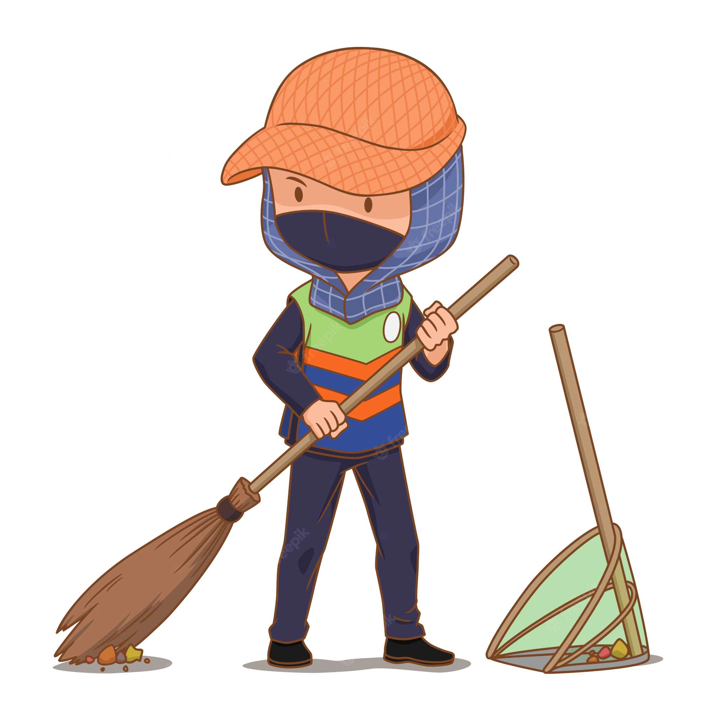

1. The person who keeps your streets and country clean, do you remember their names? They are sweepers who work all day to provide you with a clean environment.
2. Their life is full of hardships since they generally belong to economically weaker sections But they are receiving a lot of discrimination.
3. During the times of pandemic, they were warriors of health, who work selflessly to provide a healthy and hygienic place to live for others.
4. They are frontline sanitation workers who risk their own health by sweeping waste materials which can sometimes be hazardous.
5. If seen properly, it would not be difficult to say that without sweepers no life is actually possible. Our homes will stink with the stench of undisposed garbage.
6. Their important point is that the land should be swept every day in order to attain a better environment .
7. This garbage is also home to a lot of diseases. Diseases would spread at an increasing rate if cleanliness is not maintained on regular basis.
8. Cleanliness is pious. God resides in cleanliness. So, no! Their job is not menial.
